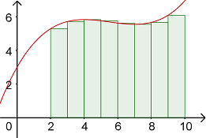

On this Page
Additional Reading
- Section 15.1
Double Integrals over Rectangular Regions
Recall back in Calc 1 that we used Riemann Sums to approximate the area under a curve. We did this by computing the area of rectangles with heights based where the rectangle touched the given function on the left, right, and midpoint.
Now that we are in 3D space, we can use a similar idea to approximate the volume under a surface. The following GeoGebra applet will help illustrate how we can approximate the volume below a function \(f(x,y)\) over a rectangular region in the \(xy\)-plane.You may also click-and-drag to rotate the view around the origin.
- Consider the surface given by \(z = f(x,y)\) and the rectangular region \([0,4]×[0,3]\) in the \(xy\)-plane. The rectangular region is divided into smaller sub-rectangles of with \(Δx = 1\) and \(Δy = 1\).
- The volume of each rectangular box (for \(k = 0\) to \(11\)) can be determined by any of its four corners or the midpoint of the sub-rectangle. For illustration, compare the boxes using the Lower Left corner, Upper Right corner, or Midpoint. The volume of each box will be \(f(x, y) ΔxΔy = f(x, y) ΔA\), which is the area of the base rectangle times the height of the box determine by the function value.
- The total volume can be approximated by the sum of all the boxes, or \(V ≈ \ \sum f(x,y) ΔA\).
For a function \(z = f(x, y)\) defined over a rectangular region \(R\) in the \(xy\)-plane that is divided into \(m\) by \(n\) sub-rectangles, the volume bounded under \(f\) over \(R\) can be approximated by \[V ≈ \ \sum\limits_{i=1}^{m}{\sum\limits_{j=1}^{n}{f\left({{x}_{i}},{{y}_{i}} \right)\Delta A}}.\]
Iterated Double Integrals
In order to go from the approximate volume to the exact volume, we can decrease the size of each sub-rectangle which increase the number of sub-rectangles - the more rectangles, the better the approximation - until we get infinitely many.
Double Integral of \(f\) Over the Region \(R\): For a function \(z=f(x,y)\) defined over a rectangular region \(R\) in the \(x\)y-plane that is divided into \(m\) by \(n\) sub-rectangles, the volume bounded under \(f\) over \(R\) can be computed using the followin formula.
\[\underset{R}{\mathop\iint}\,f\left( x,y \right)~dA=\underset{m,n\to \infty }{\mathop{\lim }}\,\underset{i=1}{\overset{m}{\mathop \sum }}\,\underset{j=1}{\overset{n}{\mathop \sum }}\,f\left( {{x}_{i}},{{y}_{i}} \right)\Delta A\]The following GeoGebra applet will help illustrate how we can compute the volume below a function \(f(x,y)\) over a rectangular region in the \(xy\)-plane. You may also click-and-drag to rotate the view around the origin.
- Consider the brown solid below, which is bounded below \(f(x,y)\) over the rectangular region \([0,4]×[0,3]\) in the \(xy\)-plane.
- Uncheck the Show f(x, y) and Show Solid boxes. Then select the dydx box. We can find the area of the pink region by integrating \(f(x,y)\) with respect to \(y\) from \(y=0\) to \(y=3\). Just like with partial derivatives, treat \(x\) as a constant when evaluating the antiderivative. The result will be a function of only \(x\)'s, so no more \(y\)'s. We then have to integrate this function with respect to \(x\) from \(x=0\) to \(x=4\). You can use the yellow slider to move the pink region along the \(x\)-axis.
- Uncheck the dydx box and select the dxdy box. We can find the area of the green region by integrating \(f(x,y)\) with respect to \(x\) from \(x=0\) to \(x=4\). Just like with partial derivatives, treat \(y\) as a constant when evaluating the antiderivative. The result will be a function of only \(y\)'s, so no more \(x\)'s. We then have to integrate this function with respect to \(y\) from \(y=0\) to \(y=3\). You can use the yellow slider to move the pink region along the \(y\)-axis.
The result of the above illustration gives us the following.
We can compute the double integral of \(f\) over a region \(R=[a,b]×[c,d]\) in the \(xy\)-plane using either iterated integral below.
\[\underset{R}{\mathop \iint}\, f(x,y)~dA = \int_{a}^{b} \int_{c}^{d}\, f(x,y)~dy~dx = \int_{c}^{d} \int_{a}^{b}\, f(x,y)~dx~dy\]The following video will help explain what the two double integrals mean.
The next video works through several examples demonstrating how we can compute the double integral of a function of a rectangular region.
In addition to computing the volume of a solid, double integrals can compute the average value of a function \(f(x,y)\) over a region \(R\). Normally, we think of computing an average by adding up a set of numbers and the dividing by how many numbers were added together. Thus the average value of a function \(f(x,y)\) would be the sum of all values of \(f\) over \(R\) divided by the number of values of \(f\), which would equal the value of the area of \(R\).